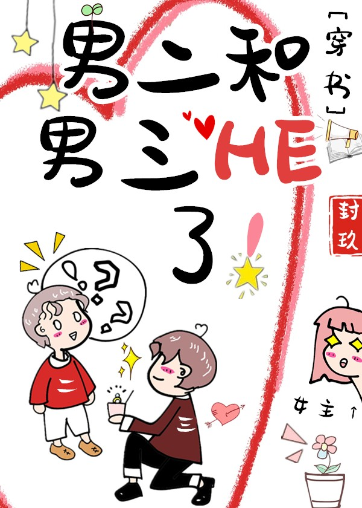

Duan Shu Tong transmigró a una historia de romance abusivo como el segundo protagonista masculino con el mismo nombre.
El segundo protagonista masculino era un playboy, pero después de conocer a la protagonista femenina, pasó página y dedicó su vida a amar solo a una persona.
La protagonista femenina se lesiona, por lo que el segundo protagonista masculino la lleva al hospital, pero quien la saca del hospital es el protagonista masculino.
La protagonista femenina es intimidada, el segundo protagonista masculino aparece a tiempo para salvar a la protagonista femenina, pero la protagonista femenina se arroja a los brazos del protagonista masculino para llorar;
La protagonista femenina queda embarazada y se escapa con el bebé, el segundo protagonista masculino la acompaña, pero cuando nace el bebé viene con un radar preinstalado que solo se acerca al protagonista masculino;
…
Duan Shu Tong se vio afectado por la trama del libro original y decidió darle estas oportunidades al tercer protagonista masculino "profundamente enamorado" que nunca se casó en su vida.
Como resultado, el tercer protagonista masculino "profundamente enamorado" empuja a la protagonista femenina y le entrega un anillo.
Duan Shu Tong:…